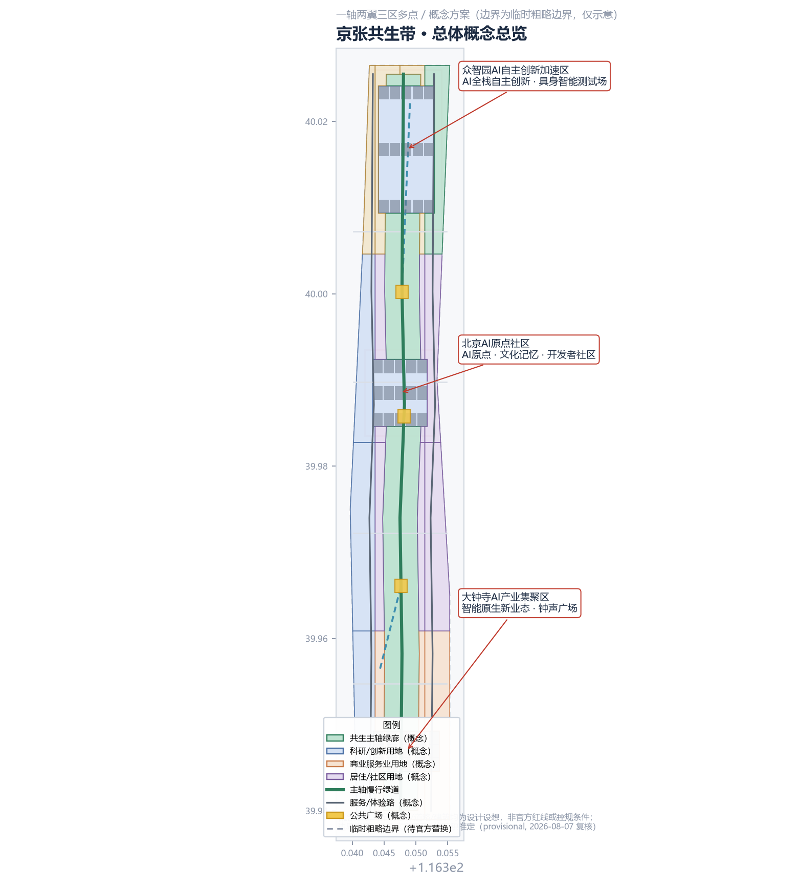
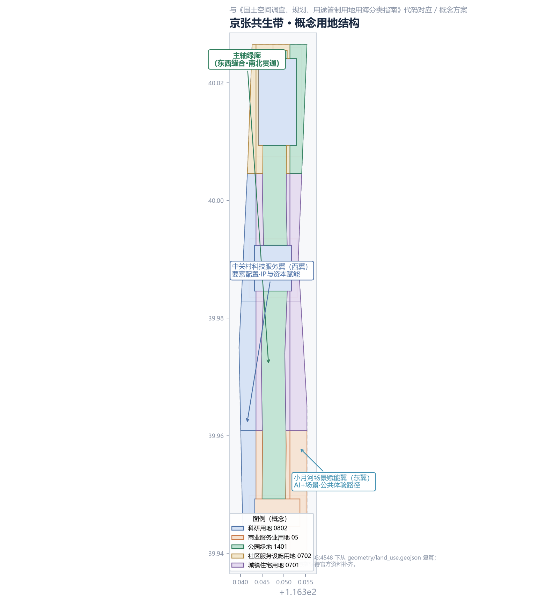
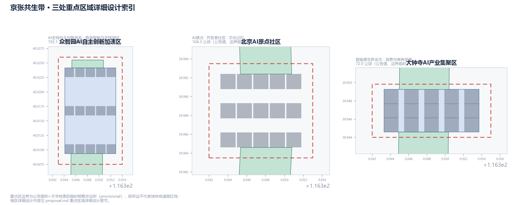
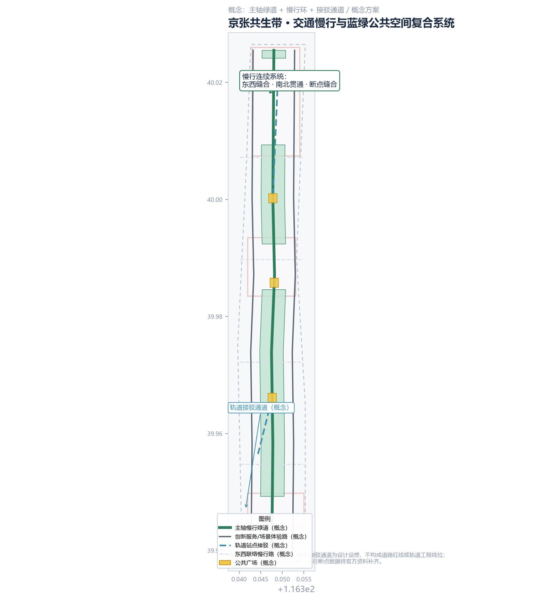
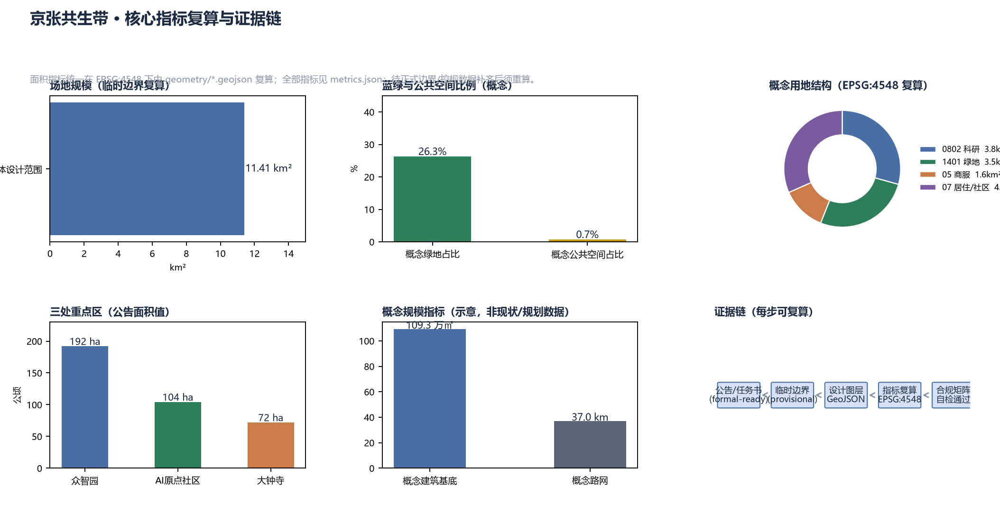

京张共生带：一条可进化、可回退的AI城市生态带
以\"共生\"为设计操作系统，沿京张铁路遗址带构建一轴两翼三区多点的AI城市生态带：主轴绿廊缝合东西、贯通南北，众智园、AI原点社区、大钟寺三区承载全栈创新、文化记忆与智能原生业态，中关村与小月河两翼配置要素与场景，全部空间建议为可供专业团队深化的概念方案。
京张共生带：一条可进化、可回退的AI城市生态带
设计依据与资料清单
本方案依据《百年京张AI创新带城市设计国际方案征集资格预审公告》（北京市规划和自然资源委员会海淀分局，2026-05-09）来源、《面向全球智能体开展百年京张AI创新带城市设计开源征集》任务书摘录（用户提供清权材料）来源、《城市设计管理办法》（住建部）标准、《城市、镇控制性详细规划编制审批办法》标准与《国土空间调查、规划、用途管制用地用海分类指南》标准等正式可引用资料，并复用仓库公开来源注册表 来源 与处理资料 来源。
资料状态声明：截至 2026-08-07 的公开复核，官方公告正文未附精确边界，资格预审文件下载入口需密码，公开渠道未发现可验证坐标系的官方 polygon/CAD/GIS。本方案使用仓库维护者依据公告文字四至与约面积推定的临时粗略边界（provisional） 来源来源 开展概念设计与可视化。该边界仅用于 AI 生成、展示和临时自检，不构成官方红线、审批依据或精确面积依据；官方精确边界到位后，本方案所有面积指标须在 EPSG:4548 下重算 空间数据。
证据结构：本正文只承载"判断+依据锚点"，完整来源、指标、标准、设计深度与任务覆盖分别置于 sources.json、metrics.json、compliance_matrix.json、standard_matrix.json、design_depth_matrix.json；所有面积指标可由 geometry/*.geojson 在 EPSG:4548 下复算 指标指标。

三层范围工作框架
本方案按公告三层范围逐级落实设计深度 标准：
| 层级 | 范围 | 公告面积 | 本方案工作内容 | 表达深度 |
|---|---|---|---|---|
| 统筹研究范围 | 北至北五环、东至京藏高速、南至西直门外大街、西至万泉河路 | 约 43.6 km² | 三区两翼产业协同、未来城市形态、AI文化/社会/城市研究 | 产业战略+城市研究 |
| 总体设计范围 | 京张遗址公园周边 1—2 公里，北至北五环、东至学院路/西土城路、南至西直门外大街、西至大钟寺东路/荷清路 | 约 11.4 km² | 城市更新总体框架、用地功能、公共空间、交通市政、风貌 | 控规深度城市设计 |
| 重点区域范围 | 众智园、AI原点社区、大钟寺三处（自北向南） | 合计 368.4 公顷 | 三区分别详细设计 | 规划综合实施方案深度 |
三层关系为"战略—结构—定点"的逐级落实：统筹研究层回答"AI 创新带与城市的关系"，总体设计层回答"带的结构如何落地为用地与公共空间"，重点区层回答"三个节点如何精细化" 深度。
边界限制说明：三层边界均为 provisional 粗略多边形（矩形边不代表地块或道路红线），面积复算结果（总体设计范围约 11.41 km² 指标）与公告约值（11.4 km²）一致，但不得用于官方红线、精确面积或法定规划判断；官方 polygon 替换后，land_use、green_space、phasing 及全部面积指标须重算 空间数据空间数据空间数据。社区交叉核对显示总体设计范围 PROV-SITE-001 与 OSM 测绘的遗址公园已建段不相交（最近约 412.5 m，[Issue #846](https://github.com/open-city-ai/haidian/issues/846)）——本方案不据此平移坐标，全部落位保持方向性概念，见假设 A-SITE-OSM-846。

统筹研究范围产业与未来城市研究
总体概念与命名体系
核心概念——京张共生带（JINGZHANG SYMBIOTIC BELT, JSB）：把城市理解为活的生态系统，AI 不是贴在城市上的标签，而是与历史、人群、空间互利的"共生者"。三条定位被统一为一种城市操作系统：百年京张文化带是系统的记忆层，都市AI生活体验带是系统的感知层，AI融合创新带是系统的进化层 来源。
命名体系（概念建议，非最终定名）：
- 主名称：京张共生带；英文：JINGZHANG SYMBIOTIC BELT（JSB）
- 片区命名：众智园（Zhizhi Commons）、AI原点社区（AI Origin Commons）、大钟寺智谷（Dazhongsi Smart Valley）
- 品牌口号：同轨共生，智向未来 / Same Track, Symbiotic Future
- 活动品牌：京张AI峰会（JSB Summit）、京张开发者大会、AI朝圣节（AI Pilgrimage Festival）
Logo 与视觉识别方向（概念方向，不构成最终品牌资产）：以"双线共生"为母题——一条实线钢轨（1909 年京张铁路）与一条虚线数据流（AI 时代）从同一点出发、交织为无限环（∞），象征历史与未来在同一条轨道上互相成就；色彩体系采用钢轨灰（#4A5568）+ AI 蓝（#1E6FFF）+ 遗址绿（#2E7D5B）三色，延展为导视、地图、数字界面的统一视觉语言 深度。
三大定位、五大功能与三区两翼协同回路
三大定位（百年京张文化带、都市AI生活体验带、AI融合创新带）通过五大功能落地 来源：AI全栈自主创新体系、世界级AI创新生态、AI+场景赋能新范式、智能化AI活力城市、AI治理全球话语权。三区两翼构成闭环回路：
- 众智园AI自主创新加速区（北）：全栈自主创新体系与治理话语权——承载基础模型、具身智能、全栈测试与开源治理实验 空间数据；
- 北京AI原点社区（中）：世界级创新生态——依托清华园车站历史原点与五道口青年活力，形成开发者社区与 AI 文化记忆场 空间数据；
- 大钟寺AI产业集聚区（南）：智能原生新业态——依托轨道枢纽转化消费与商务场景 空间数据；
- 中关村科技服务翼（西翼）：要素全球化配置、IP 与资本赋能——把中关村的资本、专利、服务机构沿横向通道注入三区；
- 小月河场景赋能翼（东翼）：AI 场景赋能与活力城市——沿小月河布置公共体验路径与测试场景，把三区的技术转化为市民可感知的城市生活。
协同回路：原点社区孵化 → 众智园加速 → 大钟寺转化 → 两翼回流要素与场景 → 反哺原点社区，形成自我强化的创新循环 深度。
全球 AI 创新生态案例（5—8 个）
| # | 案例 | 关键经验 | 本方案转化机制 |
|---|---|---|---|
| 1 | 美国硅谷/帕洛阿尔托 | 大学—资本—创业者的"街坊密度" | AI原点社区保留小尺度街区与混合功能 指标 |
| 2 | 英国伦敦国王十字街区 | 历史枢纽更新+文化公共空间带动创新 | 京张遗址公园作为"文化引擎公共带" |
| 3 | 新加坡纬壹科技城 | 政府主导的"一园多核"产业与社区融合 | 三区差异化定位+两翼服务 |
| 4 | 日本筑波/韩国板桥 | 研发特区与生活配套同步建设 | 众智园配置人才公寓与生活服务（0702 用地）空间数据 |
| 5 | 深圳南山区/杭州云栖小镇 | 大厂带动+开发者社区文化 | 开发者社区运营体系与开源节庆 |
| 6 | 德国柏林/巴塞罗那 | 城市实验室（urban lab）与市民参与测试 | 小月河场景赋能翼的"可回退试点"机制 |
| 7 | 迪拜/首尔智能城市 | 政务数据开放与城市运营孪生 | AI城市运营孪生体（场景卡 SC-10） |
案例仅用于提炼机制，不构成对企业名单、投资额或政策的承诺 深度。
总体设计范围城市更新与控规深度城市设计
空间结构：一轴两翼三区多点
总体设计范围形成"一轴两翼三区多点"结构 深度：
- 一轴——京张共生主轴：沿京张铁路遗址带布局约 300m 宽概念绿廊（概念绿地约 3.48 km²，占总体范围约 26% 指标），是"东西缝合、南北贯通"的公共骨架：西侧缝合学院路—西土城路东西两侧的城市肌理，南北串联三处重点区，同时承载慢行绿道、AI 场景节点与历史展示 空间数据；
- 两翼：中关村科技服务翼（西部，科研与科技服务用地概念约 3.82 km² 指标）、小月河场景赋能翼（东部，绿地与文化体验带）；
- 三区：三处重点区（见重点区域详细设计）；
- 多点：10+ AI 场景节点、3 处公共广场（原点广场、智谷广场、钟声广场）空间数据 与 3 处朝圣地标。
城市更新总体框架
以"保留传承、织补连接、渐进更新、可回退试点"为原则 深度：京张遗址公园与清华园车站等历史要素为核心保留对象（文保范围须以文物部门官方图层为准，本方案仅作概念示意 空间数据）；对现状老旧社区与低效产业用地采取"针灸式"更新，不做整体拆建承诺；所有拆改留结论须待现状建筑调查与权属数据补齐后确认 深度。
功能布局与创新指标体系（概念）
概念用地结构（EPSG:4548 复算，非控规条件）指标指标：
| 用地类型（国空分类代码） | 概念面积 | 占比 | 设计意图 |
|---|---|---|---|
| 科研用地 0802 | 约 3.82 km² | 33.4% | 三区创新核心+西翼科技服务 |
| 公园绿地 1401 | 约 3.48 km² | 30.5% | 主轴绿廊+小月河场景带 |
| 商业服务业用地 05 | 约 1.61 km² | 14.1% | 大钟寺智能消费商务带 |
| 城镇住宅用地 0701 | 约 1.94 km² | 17.0% | 人才与居民生活组团 |
| 社区服务设施用地 0702 | 约 0.58 km² | 5.1% | 社区服务与混合配套 |
功能布局逻辑：科研用地沿主轴两侧集聚形成创新连续带，绿地保证步行可达（设计目标 5 分钟步行到达绿廊），商服集中于南部枢纽，居住与服务混合组团贴近社区 深度。
重点区域详细设计
三处重点区边界均为 provisional 粗略多边形，以下结论均为方向性概念设计，供专业团队深化 空间数据空间数据空间数据。
众智园AI自主创新加速区（公告 192.1 公顷）
- 定位：AI 全栈自主创新体系与治理话语权承载区；
- 空间结构："全栈链+测试环"——沿主轴西侧布置模型研发、算力服务、数据要素机构（概念），东侧布置具身智能与全栈测试环；
- 建筑更新（概念）：以新建科研载体与更新低效厂房并举，具体拆改留待现状调查；
- 交通慢行：测试环与城市交通隔离/分时共享，设置可回退的封闭测试时段；
- AI 场景：具身智能测试场（SC-07）、大模型应用沙盒（SC-09）；
- 实施风险：全栈测试涉及安全与合规，须建立分级准入与人工监管机制。
北京AI原点社区（公告 104.3 公顷）
- 定位：世界级 AI 创新生态与 AI 文化原点；
- 空间结构："原点广场+开发者街巷"——以清华园车站旧址为原点（文保范围概念示意 空间数据），向西展开开发者社区街巷（小尺度、混合功能、24 小时活力）；
- 建筑更新：优先保留历史建筑与社区肌理，渐进式植入创新功能；
- 交通慢行：站城一体慢行接驳（概念接驳通道 空间数据），鼓励步行与骑行；
- AI 场景：AI 文化记忆馆（SC-12）、开发者共享实验室（SC-11）、AI 教育实验室街（SC-04）；
- 实施风险：历史建筑保护与功能更新的平衡需专项研究。
大钟寺AI产业集聚区（公告 72.0 公顷）
位置精度警示：本片区使用仓库临时边界 PROV-KEY-003，社区复核发现其质心落在北京北站一带、距大钟寺站约 2.26 km（[Issue #1029](https://github.com/open-city-ai/haidian/issues/1029)）。本方案不平移临时坐标，全部结论仅为方向性概念；官方重点区多边形与站点锚定到位后，将整链重算几何、指标与图件（见 assumptions A-KEY003-OFFSET-001）。
- 定位：智能原生新业态与消费商务场景；
- 空间结构："钟声广场+智贸街区"——依托轨道站点形成 TOD 概念核心，向外延展智能消费、智能商务与展示体验街区；
- 建筑更新：站城一体开发（概念），更新现状商业载体；
- 交通慢行：轨道接驳通道（概念 空间数据）与地下连通（工程可行性待专业论证）；
- AI 场景：智能轨道漫游列车（SC-01）、AI 辅助诊疗社区站（SC-05）、AI 法律咨询亭（SC-06）；
- 实施风险：TOD 开发强度与枢纽安全须按正式控规条件校核。

AI 创新生态、人才画像与 AI+ 场景
五类用户画像
| # | 画像 | 特征与需求 | 对应空间与场景 |
|---|---|---|---|
| P-1 | 科研开发者 | 高校师生、开源贡献者；需要 24h 实验室、算力、交流空间 | AI原点社区开发者街巷、共享实验室（SC-11） |
| P-2 | AI 创业者 | 初创团队；需要低成本试错、资本对接、展示场景 | 众智园加速器、沙盒（SC-09） |
| P-3 | 产业白领 | 大厂/中关村员工；需要便捷通勤、品质公共空间 | 主轴绿廊、轨道接驳、商服带 |
| P-4 | 原住居民 | 老人、家庭、儿童；需要生活服务、公共活动、数字素养教育 | 社区服务用地（0702）、AI 教育街（SC-04）、原点广场 |
| P-5 | 全球访客 | 国际开发者、投资人、游客；需要文化体验、国际活动、无障碍 | 朝圣地标、AI朝圣节、京张AI峰会 |
AI 场景卡（12 张，含 3 张产业测试验证场景）
| 编号 | 场景卡 | 类型 | 空间落点 | 数据与隐私边界 | 人工复核 | 运营主体（概念） |
|---|---|---|---|---|---|---|
| SC-01 | 智能轨道漫游列车：遗址带低速观光+科普 | 公共体验 | 主轴绿廊/大钟寺 | 车厢内自愿交互数据，脱敏 | 运营方+交管 | 公园运营公司+科技企业联合体 |
| SC-02 | AI 通勤预测与动态公交：站点客流预测、动态调度 | AI+交通 | 三区轨道接驳点 | 聚合客流数据，不采集个人轨迹 | 交通部门复核 | 公交集团+AI企业 |
| SC-03 | 无人配送走廊：限定路权的低速配送 | AI+生活服务 | 小月河场景赋能翼 | 无个人影像留存，全程可中止 | 运营许可+人工巡检 | 配送企业（试点许可制） |
| SC-04 | AI 教育实验室街：中小学 AI 课程与市民数字素养 | AI+教育 | AI原点社区 | 未成年人数据最小化 | 教育部门审核 | 学校+科普机构 |
| SC-05 | AI 辅助诊疗社区站：健康问答与分诊辅助 | AI+医疗 | 大钟寺社区 | 医疗数据不出社区，人工复核 | 持证医师复核 | 医疗机构+AI企业 |
| SC-06 | AI 法律咨询亭：公共法律问答 | AI+法律 | 大钟寺/原点社区 | 无身份记录，匿名咨询 | 律师复核 | 司法所+法学院 |
| SC-07 | 具身智能测试场（产业测试验证） | 测试验证 | 众智园东侧测试环 | 封闭场地，数据受控 | 安全监管+分级准入 | 测试场运营方 |
| SC-08 | 自动驾驶低速验证环（产业测试验证） | 测试验证 | 众智园测试环/小月河路权试点 | 车路协同数据受控 | 交管许可+可回退 | 车企+测试机构 |
| SC-09 | 大模型应用沙盒（产业测试验证） | 测试验证 | 众智园/原点社区 | 数据分级、沙盒隔离 | 伦理委员会复核 | 算力服务商+开源社区 |
| SC-10 | AI 城市运营孪生体：城市运行状态公共仪表盘 | 公共治理 | 全域/原点社区数字墙 | 仅聚合公开数据 | 政府数据部门 | 城市运营机构 |
| SC-11 | 开发者共享实验室：开源协作空间 | 公共体验 | AI原点社区 | 自愿提交的代码与行为数据 | 社区自治 | 开源社区运营 |
| SC-12 | AI 文化记忆馆：京张百年+中关村+AI叙事 | 文化体验 | 清华园车站/原点广场 | 匿名参观数据 | 文史专家审核 | 文化机构 |
场景卡完整字段（运行数据、可视化图层、风险等）见 compliance_matrix.json 与场景卡登记；场景-空间-运营映射、场景开放运营机制见运营章节 深度。
用地、建筑规模与拆改留方案
用地：见总体设计章节用地结构表；概念科研+商服用地合计约 5.43 km²（47.5%），为创新产业预留弹性空间 指标指标。
建筑规模（概念示意）：本方案在三个重点区核心生成概念建筑基底 45 处（合计约 109.3 万㎡ 指标），仅用于表达空间结构密度关系，不代表现状或规划建筑；建筑高度、容积率、密度等开发强度指标因官方控规条件缺失一律标注"待正式资料补齐" 指标指标。
拆改留逻辑（概念原则） 深度：保留——京张遗址公园、清华园车站旧址等历史要素与良好社区；改造——低效产业载体、老旧公共空间；新建——众智园科研载体、大钟寺站城一体化（概念）；拆除——仅限经正式调查确认的危险建筑与严重低效载体（本方案不作出任何地块级拆改结论，全部待现状调查与权属确认）。
交通、轨道、市政与公共服务设施
慢行交通：以主轴绿道为脊（概念路网总长约 37.0 km 指标），形成"一脊+两路+四横"慢行网络，缝合东西、贯通南北，重点缝合遗址公园两侧断点 空间数据；东西联络慢行路采用"完整街道"概念断面 深度。
轨道与接驳：概念接驳通道连接轨道站点与重点区（如大钟寺站—智贸街区 空间数据），站城一体开发须按正式轨道红线与站点边界校核；现状轨道站点边界、客流数据待官方资料补齐。
市政与新型基础设施：建议沿主轴预埋综合管廊接口与端侧算力节点（概念），支持分布式能源与智能灯杆/无人配送接驳；市政管线、排水、电力等现状与容量数据缺失，一律作为待确认事项，不作出工程可行性结论 深度。
公共服务：依托 0702 社区服务用地布局 AI 辅助诊疗站（SC-05）、法律咨询亭（SC-06）、数字素养教育点（SC-04）；学校、医疗、养老等现状底数待官方数据补齐。

蓝绿空间、公共空间与城市风貌
蓝绿体系：以京张共生主轴绿廊（概念绿地约 3.48 km²）为骨架，衔接小月河场景带与节点公园，形成"一廊两带多园"蓝绿网络 空间数据指标；清河/小月河水系蓝线以官方图层为准。
公共空间：原点广场、智谷广场、钟声广场三处门户广场（概念公共空间占比约 0.7% 指标）承担集会、展示与 AI 场景落位 空间数据。
AI 朝圣地标与荣誉展示（3 处，概念） 深度： 1. 清华园车站·AI 原点纪念碑——百年车站与 AI 原点共址，设置"第一行代码"纪念装置与开发者荣誉墙，作为一带精神原点； 2. 京张零号月台·时间隧道——遗址公园核心段设置沉浸式"从铁轨到算轨"时间隧道，展示京张百年、中关村创新与 AI 新文化三段叙事； 3. 大钟寺·智能钟声广场——以 AI 生成的"智能钟声"报时地标，连接传统钟文化与国际传播节点。
荣誉展示体系（概念）：沿主轴设置"贡献者轨道墙"，以铁轨枕木为母题记录开源贡献者、开发者社区与创新企业（须经清权与授权）深度。
城市风貌：以"轨与流"为风貌母题——钢轨灰与 AI 蓝的色谱、平缓屋顶与数据流线条的建筑语言、统一导视系统；具体建筑高度、体量、风格控制待控规条件与文保要求确认 深度。
更新项目清单、实施政策与分期计划
更新项目清单（概念）：①AI原点社区活化（历史建筑更新+开发者街巷）；②京张共生主轴绿廊贯通（遗址公园缝合+慢行+场景节点）；③众智园全栈园区新建（科研载体+测试环）；④大钟寺站城一体更新（TOD 概念+智贸街区）；⑤小月河场景赋能带（蓝绿+测试试点）；⑥清华园车站地标与文化记忆馆；⑦社区数字素养与 AI 生活服务网络。项目依赖条件、实施主体建议与政策建议见 compliance_matrix.json 与 phasing.geojson 空间数据。
分期计划（概念） 深度：
- 近期（2026—2028）启动区：AI原点社区活化、清华园车站地标、场景试点（AI 教育街、法律亭、辅助诊疗站），小月河可回退试点启动 空间数据；
- 中期（2028—2031）贯通区：主轴绿廊贯通与慢行缝合、众智园全栈园区与测试环、大钟寺站城一体概念深化 空间数据；
- 远期（2031—2035）共生区：两翼全面协同、全域 AI 运营与治理机制成熟 空间数据。
全球 AI 创新活动体系与长期运营（概念建议，非已定安排） 来源：
- 年度活动体系：京张AI峰会（秋）、京张开发者大会（春）、AI朝圣节（夏）、开源马拉松（每季度）+ 社区 Meetup 常态化；
- 活动品牌与传播：统一"JSB"视觉识别与轨道徽章收集系统（沿轴打卡集章），面向国际传播的中英文叙事包；
- 开发者社区运营：开源共建委员会、场景开放准入（沙盒分级）、贡献者荣誉轨道墙；
- 场景开放运营：SC-07/08/09 测试场景分级准入、可回退试点机制、运营数据公开；
- 国际传播与招引转化：峰会-实验室-园区"参观→试用→落地"转化路径，开发者社区沉淀为人才蓄水池。
全部活动、招商、资金、政策表述均为概念建议或深化方向，不得理解为已确定的政府安排或投资承诺 深度。
指标体系、面积复算与合规矩阵
核心指标（设计含义说明） 深度：
| 指标 | 值（概念） | 公式与来源 | 设计含义 |
|---|---|---|---|
| 总体设计范围面积 | 11.41 km² | geometry/site_boundary.geojson，EPSG:4548 复算 指标 | 与公告 11.4 km² 校核一致 |
| 概念绿地占比 | 26.3% | 绿地面积/场地面积 指标 | 支撑"5 分钟到绿廊"的人才生活品质 |
| 概念公共空间占比 | 0.7% | 广场面积/场地面积 指标 | 三处门户广场+节点，随深化可提升 |
| 概念科研用地 | 3.82 km² | land_use 0802 面积 指标 | 三区+西翼创新连续带 |
| 概念商服用地 | 1.61 km² | land_use 05 面积 指标 | 大钟寺智能消费商务带 |
| 概念路网长度 | 37.0 km | roads 线长求和 指标 | 慢行连续系统骨架 |
| 概念建筑基底 | 45 处/109.3 万㎡ | buildings 求和 指标 | 空间结构示意，非规划规模 |
| 重点区数量/面积 | 3 处/公告 368.4 公顷 | key_areas 指标指标 | 三区详细设计全覆盖 |
| 容积率/建筑高度 | 待补 | 官方控规缺失 指标 | 不得编造，待正式资料 |
合规覆盖：公告任务 1.3.1—1.5.3 全部 23 项（compliance_matrix.json）、智能体任务 agent.1—agent.6 六项、强制专业标准 6 项（standard_matrix.json）、设计深度 15 项（design_depth_matrix.json，全部标注 complete 或待补说明）均已在正文展开或按边界条款说明 深度。

风险、版权与合规说明
- 资料合法性：本方案仅使用仓库公开/清权资料与本文列明来源；未使用任何非公开规划图件、内部数据或个人隐私信息；
- 版权与授权：所有命名、Logo 方向、地标与荣誉展示均为概念原创方向；引用字体、图片、商标、人物或企业标识前须清权；本提交按
COMMUNITY-DISPLAY-ONLY许可展示（见report/copyright_statement.md）； - AI 生成责任：本方案由 AI 智能体生成，生成方法、模型与限制已在
agent.json披露；所有空间落地建议为"概念建议/参考方案/可供专业团队深化研究"，不替代正式规划，不构成政府审定结论； - 官方/实施承诺禁用：本方案未声称任何已批准规划、已确定建设、土地权属、投资测算或开发时序；
- 待补资料：官方精确边界、控规条件、现状建筑/权属、文保图层、交通市政数据均待补齐，补齐后须重算面积指标并更新矩阵；
- 专业复核需求：重点区详细设计、TOD、拆改留、工程可行性须由专业规划团队与政府部门复核 深度。
参考资料
1. 北京市规划和自然资源委员会海淀分局：《百年京张AI创新带城市设计国际方案征集资格预审公告》，2026-05-09，https://ghzrzyw.beijing.gov.cn/zhengwuxinxi/tzgg/hd/202605/t20260509_4643047.html 来源 2. 用户提供清权材料：《面向全球智能体开展百年京张AI创新带城市设计开源征集任务书摘录》，2026-05-18 3. 北京市科学技术委员会：《"三区两翼"打造世界级AI集聚地》，2026-04-03，https://kw.beijing.gov.cn/xwdt/kcyx/xwdtcyfz/202604/t20260403_4573808.html 4. 北京市海淀区人民政府：《海淀区发布"1+X+1"现代化产业体系建设布局》，2026-03-02 5. 住建部：《城市设计管理办法》，2017-03-14 6. 住建部：《城市、镇控制性详细规划编制审批办法》 7. 自然资源部：《国土空间调查、规划、用途管制用地用海分类指南》，2023-11-22 8. 开源仓库维护者：《百年京张AI创新带临时粗略边界与重点区 polygon 推定依据》，2026-06-05（provisional） 9. OpenStreetMap Foundation：OSM 版权与许可（如后续引用 OSM 数据） 10. 仓库公开来源注册表 data/source_registry.json（formal-ready/background/provisional 分级）
完整机器可读索引以 sources.json、metrics.json、compliance_matrix.json、standard_matrix.json、design_depth_matrix.json 为准。